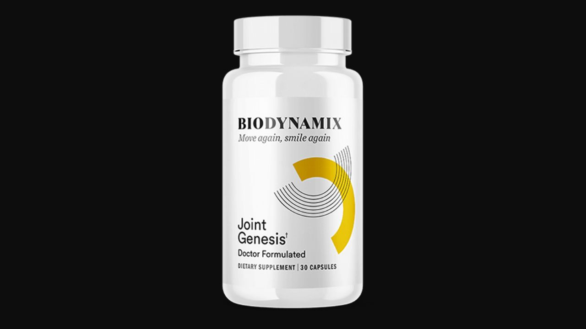

I analyzed all 5 ingredients — including Mobilee, the patented compound backed by 14 clinical trials — against published research. Here's the honest truth about what this formula does and doesn't do.
▶ Watch our full Joint Genesis video review before buying
Joint Genesis is the most scientifically credible joint supplement I've reviewed. The star ingredient Mobilee has 14 randomized controlled clinical trials behind it — an extraordinary evidence base for a supplement ingredient. It doesn't mask joint pain like an anti-inflammatory drug. It addresses the actual biological deficit driving age-related joint decline: hyaluronan depletion. For adults 40+ with morning stiffness, knee discomfort, or reduced mobility, this is the formula I'd recommend first.
Joint Genesis is a daily joint health supplement developed by BioDynamix in collaboration with Dr. Mark Weis, a medical research director. The formula was inspired by the remarkable mobility of elderly residents in Yuzurihara — a village in Japan where men and women in their 70s, 80s, and even 90s maintain joint flexibility and comfort that most Western adults lose by their 50s.
The investigation into Yuzurihara's secret pointed to one biological factor: the villagers had unusually high levels of hyaluronan in their joints — a compound directly linked to their traditional diet of purple sweet potatoes called Satsumaimo. Hyaluronan is the molecule responsible for the thick, lubricating, shock-absorbing quality of synovial fluid. When hyaluronan is abundant, joints move smoothly and comfortably. When it depletes — as it does for most people starting around age 30 — synovial fluid thins, cartilage becomes exposed, and the progressive stiffness, grinding, and discomfort of age-related joint decline begins.
Joint Genesis was formulated to replicate the hyaluronan-supporting effect of the Satsumaimo diet using a concentrated, patented ingredient called Mobilee — combined with four complementary botanicals that address inflammation, blood flow, and cartilage protection simultaneously.

In nine years of reviewing supplements, I've rarely seen an ingredient with the clinical depth of Mobilee. Fourteen randomized, placebo-controlled, double-blind clinical trials is a research portfolio that most pharmaceutical compounds would envy. The 80mg dose used in Joint Genesis matches the clinically studied dosage. This is not a token inclusion — it is the therapeutically relevant amount. That level of rigor is what makes Joint Genesis stand apart in a category full of mediocre products.
Dr. J.R. Levick of St. George's Hospital Medical School — a world-leading joint health authority — described hyaluronan as "the guardian of joints." Here's why this molecule is so critical.
Synovial fluid is the liquid that fills the spaces inside your joints. Its primary role is lubrication — allowing bones and cartilage to glide against each other smoothly during movement. Hyaluronan is what gives this fluid its viscous, gel-like quality. Think of it as the difference between oil and water — a joint with healthy hyaluronan levels moves like well-oiled machinery; a joint with depleted hyaluronan feels like metal grinding on metal.
The problem: hyaluronan production declines with age. By the time most people reach their 40s and 50s, synovial fluid has become noticeably thinner. Cartilage that was cushioned and protected begins to experience friction. The body mounts an inflammatory response to the damage — and the cycle of pain, stiffness, and further cartilage breakdown accelerates.
This is why most joint supplements fail: they address inflammation (a symptom) without addressing hyaluronan depletion (the cause). Joint Genesis targets the root.
Mobilee is not ordinary hyaluronic acid. It is a patented complex that combines hyaluronic acid with collagen and polysaccharides — a molecular combination that works synergistically to increase the body's own hyaluronan production. In clinical research, 80mg of Mobilee has been shown to multiply hyaluronan levels in synovial fluid by up to 10 times. This is not an incremental improvement — it is a transformative restoration of the biological environment inside the joint. The 14 published randomized controlled trials supporting Mobilee represent an evidence base rarely seen for a supplement ingredient. Studies show improvements in joint comfort, stiffness, muscle strength, physical function, and quality of life within 4-8 weeks.
Pycnogenol is extracted from the bark of Pinus pinaster trees in the Les Landes forest of southern France. It is one of the most studied natural antioxidant complexes in existence, with over 400 published studies. In the context of joint health, Pycnogenol works through two key mechanisms: it inhibits the production of pro-inflammatory cytokines that damage joint tissue, and it improves microcirculation — increasing blood flow to the capillaries that supply nutrients to joint cartilage. Several published clinical trials specifically on joint health show Pycnogenol reduces joint stiffness and discomfort, particularly in individuals with osteoarthritis.
Boswellia is a resin extracted from the Boswellia sacra tree, used in Ayurvedic medicine for centuries to treat joint conditions. Modern pharmacology has identified the mechanism: boswellic acids specifically inhibit 5-lipoxygenase (5-LOX), the enzyme responsible for producing leukotrienes — inflammatory compounds that directly degrade cartilage. By blocking 5-LOX, Boswellia doesn't just reduce pain signals — it interrupts the chemical cascade that causes cartilage breakdown. Multiple randomized controlled trials confirm significant reductions in joint pain scores, improved physical function, and increased walking distance in subjects with knee osteoarthritis.
Ginger contains active compounds called gingerols and shogaols that have potent anti-inflammatory and antioxidant effects. In joint health research, ginger demonstrates two relevant benefits: it reduces the production of inflammatory prostaglandins in joint tissue (a mechanism similar to non-steroidal anti-inflammatory drugs but gentler), and it improves peripheral circulation — enhancing the delivery of oxygen and nutrients to joint tissue. A meta-analysis of randomized trials found ginger supplementation produced significant reductions in joint pain and stiffness compared to placebo.
BioPerine is a patented black pepper extract standardized to 95% piperine. Its role in Joint Genesis is critical: piperine inhibits drug-metabolizing enzymes in the intestinal wall, increasing the bioavailability of the other ingredients by 20-2000% depending on the compound. Without BioPerine, a significant percentage of the active compounds in the formula would be metabolized before absorption. With it, you get the full therapeutic benefit from the precise doses formulated into each capsule.
Anti-inflammatory effects of Boswellia and Ginger begin reducing the inflammatory load in joint tissue. Most users report that the stiffness felt in the first minutes after waking — the classic sign of synovial fluid depletion — begins to shorten. Joints feel more fluid earlier in the morning.
Mobilee has now been present in the body long enough to meaningfully influence hyaluronan production. Synovial fluid quality is improving. Users in this phase commonly report being able to perform activities — stairs, walking, kneeling — with noticeably less discomfort. The grinding or clicking sound many experience from joint friction often reduces.
Hyaluronan levels are approaching the clinically meaningful increases documented in Mobilee trials. Physical function scores improve — users report being able to return to activities they had given up: gardening, hiking, dancing, playing with grandchildren. Joint comfort is now consistent rather than variable.
With consistently elevated hyaluronan levels and ongoing anti-inflammatory support, the cartilage degradation cycle is interrupted at the source. Users in this phase often describe feeling the joint health they had 10-15 years ago — not just reduced pain, but genuine functional restoration.
"My knees had been the reason I stopped doing everything I loved — gardening, hiking, even long walks with my husband. I had tried glucosamine and chondroitin for years with minimal results. Within three weeks of starting Joint Genesis my morning stiffness was dramatically reduced. By month two I was back in the garden. I've now completed six months and the improvement has been consistent and remarkable."
"I was taking prescription anti-inflammatories for my knees and hip daily. My doctor recommended I find a natural alternative because of long-term concerns with the medication. Joint Genesis was the first supplement that actually made a difference I could feel. My orthopedist was surprised at my last appointment — she said my joint function assessment had improved noticeably."
"I was skeptical — at 72 I've tried everything. The first month was subtle. By month two something had clearly changed. The constant dull ache in my hips that I had accepted as part of aging is now mostly gone. I move more freely than I have in years. The 180-day guarantee was what convinced me to try it, and I'm glad I committed to the full three months before judging."
180-Day Guarantee · Made in USA · GMP Certified · Mobilee — 14 Clinical Trials
→ Visit Official Joint Genesis WebsiteThe 6-bottle package aligns with the full hyaluronan restoration timeline documented in Mobilee clinical trials. It also provides complete coverage for the 180-day money-back guarantee window.
GMP Certified · Made in USA · Mobilee — 14 Clinical Trials · 180-Day Guarantee
→ Get Joint Genesis at the Official PriceAffiliate Disclosure: This review contains affiliate links. If you purchase through our links, we may earn a commission at no additional cost to you. This does not influence our analysis. See our full Affiliate Disclosure. The statements on this page have not been evaluated by the FDA. This product is not intended to diagnose, treat, cure, or prevent any disease. Always consult your healthcare provider before starting any supplement.